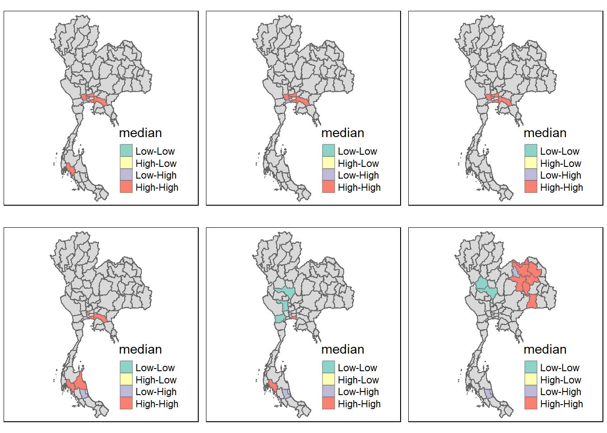
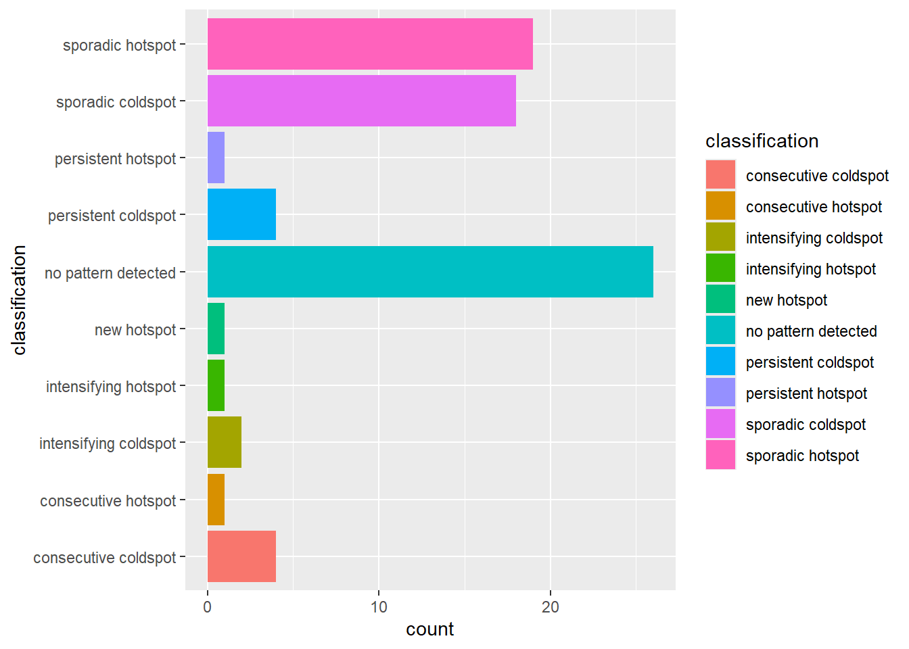
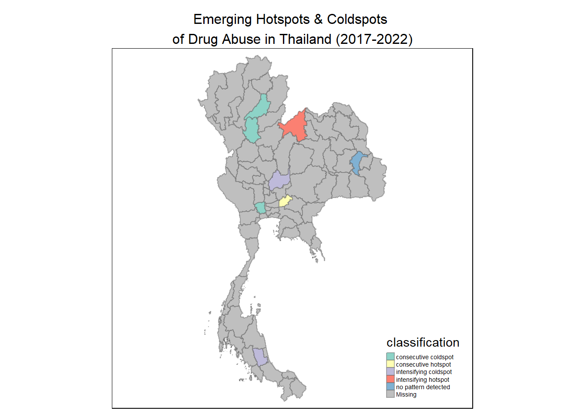

pacman::p_load(tidyverse, sf, sfdep, tmap, Kendall)Take-Home Exercise 2
Take-home Exercise 2: Application of Geospatial Analysis Methods to Discover Thailand Drug Abuse at the Province Level
1.0 Overview
Drug abuse is associated with significant negative health, financial and social consequences. Yet, illicit drug consumption remains highly prevalent and continues to be a growing problem worldwide. In 2021, 1 in 17 people aged 15–64 in the world had used a drug in the past 12 months. Notwithstanding population growth, the estimated number of drug users grew from 240 million in 2011 to 296 million in 2021.
In Thailand, drug abuse is a major social issue. There are about 2.7 million youths using drugs in Thailand. Among youths aged between 15 and 19 years, there are about 300,000 who have needs for drug treatment. Most of Thai youths involved with drugs are vocational-school students, which nearly doubles in number compared to secondary-school students.
1.1 Objectives
We are interested to discover:
if the key indicators of drug abuse of Thailand are independent from space.
If the indicators of drug abuse is indeed spatially dependent, then, we would like to detect where are the clusters and outliers, and the hotspots.
Last but not least, we are also interested to investigate how the observations above evolve over time.
1.2 Task
The specific tasks of this take-home exercise are as follows:
Using appropriate function of sf and tidyverse, preparing the following geospatial data layer:
a study area layer in sf polygon features. It must be at province level (including Bangkok) of Thailand.
a drug abuse indicators layer within the study area in sf polygon features.
Using the extracted data, perform global spatial autocorrelation analysis by using sfdep methods.
Using the extracted data, perform local spatial autocorrelation analysis by using sfdep methods.
Describe the spatial patterns revealed by the analysis above.
2.0 Data
The following two data sets will be used:
thai_drug_offenses_2017_2022.csvThis dataset presents statistics related to different types of drug offenses in Thailand, categorized by fiscal year, and provides insights into the prevalence of various drug-related cases and their distribution across different provinces. It was downloaded from https://www.kaggle.com/datasets/thaweewatboy/thailand-drug-offenses-2017-2022.tha_admbnda_adm1_rtsd_20220121This dataset provides information on Thailand province boundaries in shapefile format. It was downloaded from the Humanitarian Data Exchange, a service provided by the United Nations Office for the Coordination of Humanitarian Affairs (OCHA).
3.0 Setup
For this exercise, the following R packages are used:
tidyverse, a collection of R packages designed for data science, and which provides functions to import, transform, and visualise the data.
sf, to import, manage and process vector-based geospatial data in R.
sfdep, which creates an sf and tidyverse friendly interface to the spdep package that is used to compute spatial weights, global and local spatial autocorrelation statistics
tmap, which provides functions for plotting cartographic quality choropleth maps.
Kendall, which computes the Kendall rank correlation and Mann-Kendall trend test. This will be necessary for us to perform emerging hot spot analysis.
4.0 Importing the Data
4.1 Importing Spatial Data
Import tha_admbnda_adm1_rtsd_20220121 as a simple features object, which we name thailand. This is the required study area layer in sf polygon feature format.
#|eval: FALSE
thailand <- st_read(dsn = "data/geospatial", layer = "tha_admbnda_adm1_rtsd_20220121")Reading layer `tha_admbnda_adm1_rtsd_20220121' from data source
`C:\ImmanuelLeong\IS415-Geospatial\Take-home_Ex\Take-home_Ex02\data\geospatial'
using driver `ESRI Shapefile'
Simple feature collection with 77 features and 16 fields
Geometry type: MULTIPOLYGON
Dimension: XY
Bounding box: xmin: 97.34336 ymin: 5.613038 xmax: 105.637 ymax: 20.46507
Geodetic CRS: WGS 84thailand has a total of 77 features, and is projected in WGS 84.
We save thailand with the write_rds() function.
write_rds(thailand, "data/rds/thailand.rds")Verify that all the geometries in thailand are valid.
length(which(st_is_valid(thailand) == TRUE))[1] 77Sometimes, when importing geospatial data into R, the coordinate system of the source data is wrongly assigned during the importing process. Check the CRS of thailand.
st_crs(thailand)Coordinate Reference System:
User input: WGS 84
wkt:
GEOGCRS["WGS 84",
DATUM["World Geodetic System 1984",
ELLIPSOID["WGS 84",6378137,298.257223563,
LENGTHUNIT["metre",1]]],
PRIMEM["Greenwich",0,
ANGLEUNIT["degree",0.0174532925199433]],
CS[ellipsoidal,2],
AXIS["latitude",north,
ORDER[1],
ANGLEUNIT["degree",0.0174532925199433]],
AXIS["longitude",east,
ORDER[2],
ANGLEUNIT["degree",0.0174532925199433]],
ID["EPSG",4326]]The EPSG code indicated is 4326, which is correct since the data is projected in WGS 84.
4.2 Importing Aspatial Data
Since thai_drug_offenses_2017_2022.csv is in csv format, we used read_csv() of the readr package (part of the tidyverse) to import it.
drugs <- read_csv("data/aspatial/thai_drug_offenses_2017_2022.csv")
glimpse(drugs)Rows: 7,392
Columns: 5
$ fiscal_year <dbl> 2017, 2017, 2017, 2017, 2017, 2017, 2017, 2017,…
$ types_of_drug_offenses <chr> "drug_use_cases", "drug_use_cases", "drug_use_c…
$ no_cases <dbl> 11871, 200, 553, 450, 378, 727, 820, 69, 127, 2…
$ province_th <chr> "กรุงเทพมหานคร", "ชัยนาท", "นนทบุรี", "ปทุมธานี", "พร…
$ province_en <chr> "Bangkok", "Chai Nat", "Nonthaburi", "Pathum Th…The data on the number of drug-related cases in drugs is categorized by fiscal year, type of drug offense, and province. We derive the total number of drug-related cases in each province, in each fiscal year, using group_by() and summarize() of dplyr (part of the tidyverse).
drugs_all <- drugs %>%
group_by(fiscal_year, province_en, province_th) %>%
summarize(cases = sum(no_cases))
glimpse(drugs_all)Rows: 462
Columns: 4
Groups: fiscal_year, province_en [462]
$ fiscal_year <dbl> 2017, 2017, 2017, 2017, 2017, 2017, 2017, 2017, 2017, 2017…
$ province_en <chr> "Amnat Charoen", "Ang Thong", "Bangkok", "Buri Ram", "Chac…
$ province_th <chr> "อำนาจเจริญ", "อ่างทอง", "กรุงเทพมหานคร", "บุรีรัมย์", "ฉะเชิงเทรา…
$ cases <dbl> 5076, 1614, 60067, 5061, 9318, 1536, 6435, 4021, 15620, 88…Next, we use pivot_wider() of dplyr so that each row contains the data for a single province, and each column contains the data for a single fiscal year.
drugs_all1 <- drugs_all %>%
pivot_wider(names_from = "fiscal_year", values_from = "cases")
glimpse(drugs_all1)Rows: 77
Columns: 8
Groups: province_en [77]
$ province_en <chr> "Amnat Charoen", "Ang Thong", "Bangkok", "Buri Ram", "Chac…
$ province_th <chr> "อำนาจเจริญ", "อ่างทอง", "กรุงเทพมหานคร", "บุรีรัมย์", "ฉะเชิงเทรา…
$ `2017` <dbl> 5076, 1614, 60067, 5061, 9318, 1536, 6435, 4021, 15620, 88…
$ `2018` <dbl> 5651, 2717, 70215, 8774, 8685, 2195, 11334, 5430, 18944, 1…
$ `2019` <dbl> 7339, 2781, 62291, 12393, 9086, 3215, 14796, 5862, 21722, …
$ `2020` <dbl> 3949, 2636, 44169, 6897, 9203, 3119, 8333, 5877, 22574, 14…
$ `2021` <dbl> 8961, 3513, 37318, 15960, 12344, 3128, 15131, 6635, 28778,…
$ `2022` <dbl> 4459, 2907, 12420, 8267, 4878, 2117, 8468, 3648, 14174, 96…4.3 Performing relational join
The code chunk below will be used to update the attribute table of thailand with the attribute fields of thedrugs_all1 dataframe, retaining only the relevant columns. This is performed by using inner_join() of dplyr package. We join the data frames on the English-language names of each province.
thailand_drugs <- left_join(thailand, drugs_all1, by = c("ADM1_EN" = "province_en")) %>%
select(3, 18:24)
glimpse(thailand_drugs)Rows: 77
Columns: 8
$ ADM1_EN <chr> "Bangkok", "Samut Prakan", "Nonthaburi", "Pathum Thani", "Phr…
$ `2017` <dbl> 60067, 12452, 7348, 7616, 6221, 1614, NA, 1574, 1536, 4288, 1…
$ `2018` <dbl> 70215, 17656, 9583, 11005, 8555, 2717, NA, 2117, 2195, 5766, …
$ `2019` <dbl> 62291, 23295, 11347, 14643, 10631, 2781, NA, 2586, 3215, 6391…
$ `2020` <dbl> 44169, 14615, 7064, 8744, 8549, 2636, NA, 2209, 3119, 5632, 2…
$ `2021` <dbl> 37318, 14002, 10290, 8927, 8013, 3513, NA, 2872, 3128, 6744, …
$ `2022` <dbl> 12420, 7366, 3912, 5571, 4890, 2907, NA, 1744, 2117, 3585, 86…
$ geometry <MULTIPOLYGON [°]> MULTIPOLYGON (((100.6139 13..., MULTIPOLYGON (((…There are 77 rows, corresponding to Thailand’s 77 provinces (including Bangkok). However, on further examination, we notice that values from drugs_all1 are missing for two provinces: Lop Buri and Buengkan.
This is due to a discrepancy in the English-language transcriptions of these 2 provinces in drugsall1 and thailand. To solve this, we join the two data frames using the Thai-language province names instead.
thailand_drugs <- left_join(thailand, drugs_all1, by = c("ADM1_TH" = "province_th")) %>%
select(3, 18:24)
glimpse(thailand_drugs)Rows: 77
Columns: 8
$ ADM1_EN <chr> "Bangkok", "Samut Prakan", "Nonthaburi", "Pathum Thani", "Phr…
$ `2017` <dbl> 60067, 12452, 7348, 7616, 6221, 1614, 5872, 1574, 1536, 4288,…
$ `2018` <dbl> 70215, 17656, 9583, 11005, 8555, 2717, 9547, 2117, 2195, 5766…
$ `2019` <dbl> 62291, 23295, 11347, 14643, 10631, 2781, 10043, 2586, 3215, 6…
$ `2020` <dbl> 44169, 14615, 7064, 8744, 8549, 2636, 8132, 2209, 3119, 5632,…
$ `2021` <dbl> 37318, 14002, 10290, 8927, 8013, 3513, 9254, 2872, 3128, 6744…
$ `2022` <dbl> 12420, 7366, 3912, 5571, 4890, 2907, 4647, 1744, 2117, 3585, …
$ geometry <MULTIPOLYGON [°]> MULTIPOLYGON (((100.6139 13..., MULTIPOLYGON (((…The values for all provinces are now reflected. As required, we have now obtained a drug abuse indicators layer within the study area in sf polygon feature format.
4.4 Visualising Drug Abuse Indicators
We can now plot a choropleth map showing the distribution of drug-related cases in Thailand by province for each year between 2017 and 2022, using the tmap package.
tmap_mode("plot")
thailand_2017 <- tm_shape(thailand_drugs) +
tm_fill("2017",
n = 5,
style = "quantile") +
tm_borders(alpha = 0.5) +
tm_layout(legend.height = 0.45, legend.width = 0.5, frame = TRUE)
thailand_2018 <- tm_shape(thailand_drugs) +
tm_fill("2018",
n = 5,
style = "quantile") +
tm_borders(alpha = 0.5) +
tm_layout(legend.height = 0.45, legend.width = 0.5, frame = TRUE)
thailand_2019 <- tm_shape(thailand_drugs) +
tm_fill("2019",
n = 5,
style = "quantile") +
tm_borders(alpha = 0.5) +
tm_layout(legend.height = 0.45, legend.width = 0.5, frame = TRUE)
thailand_2020 <- tm_shape(thailand_drugs) +
tm_fill("2020",
n = 5,
style = "quantile") +
tm_borders(alpha = 0.5) +
tm_layout(legend.height = 0.45, legend.width = 0.5, frame = TRUE)
thailand_2021 <- tm_shape(thailand_drugs) +
tm_fill("2021",
n = 5,
style = "quantile") +
tm_borders(alpha = 0.5) +
tm_layout(legend.height = 0.45, legend.width = 0.5, frame = TRUE)
thailand_2022 <- tm_shape(thailand_drugs) +
tm_fill("2022",
n = 5,
style = "quantile") +
tm_borders(alpha = 0.5) +
tm_layout(legend.height = 0.45, legend.width = 0.5, frame = TRUE)
tmap_arrange(thailand_2017, thailand_2018, thailand_2019, thailand_2020, thailand_2021, thailand_2022, asp = 1, nrow = 2)5.0 Global Measures of Spatial Autocorrelation
In this section, we compute global spatial autocorrelation statistics and perform spatial complete randomness test for global spatial autocorrelation.
5.1 Computing Contiguity Spatial Weights
Before we can compute the global spatial autocorrelation statistics, we need to construct a spatial weights matrix of the study area. The spatial weights matrix is used to define the neighbourhood relationships between the provinces.
In the code chunk below, st_contiguity() of sfdep is used to compute a contiguity weight matrix. This function builds a neighbours list nb based on provinces with contiguous boundaries. We use the Queen criteria to calculate our neighbours list.
Then, st_weights() is used to to assign weights to neighboring polygons. We use row-standardised weights (style = “W”). This means that for each province i, each neighbouring province is assigned an equal weight of 1/(number of neighbours of i). The spatially lagged drug-related case count of province i is calculated by summing the weighted case count values of its neighbours.
wm_q <- thailand_drugs %>%
mutate(nb = st_contiguity(geometry, queen = TRUE),
wt = st_weights(nb, style = "W", allow_zero = TRUE),
.before = 1)
wm_qSimple feature collection with 77 features and 9 fields
Geometry type: MULTIPOLYGON
Dimension: XY
Bounding box: xmin: 97.34336 ymin: 5.613038 xmax: 105.637 ymax: 20.46507
Geodetic CRS: WGS 84
First 10 features:
nb
1 2, 3, 4, 15, 59, 60
2 1, 15
3 1, 4, 5, 59
4 1, 3, 5, 10, 15, 17
5 3, 4, 6, 7, 10, 58, 59
6 5, 7, 8, 58
7 5, 6, 8, 10, 19, 25, 48, 55
8 6, 7, 9, 48, 58
9 8, 48, 49, 58
10 4, 5, 7, 17, 19
wt
1 0.1666667, 0.1666667, 0.1666667, 0.1666667, 0.1666667, 0.1666667
2 0.5, 0.5
3 0.25, 0.25, 0.25, 0.25
4 0.1666667, 0.1666667, 0.1666667, 0.1666667, 0.1666667, 0.1666667
5 0.1428571, 0.1428571, 0.1428571, 0.1428571, 0.1428571, 0.1428571, 0.1428571
6 0.25, 0.25, 0.25, 0.25
7 0.125, 0.125, 0.125, 0.125, 0.125, 0.125, 0.125, 0.125
8 0.2, 0.2, 0.2, 0.2, 0.2
9 0.25, 0.25, 0.25, 0.25
10 0.2, 0.2, 0.2, 0.2, 0.2
ADM1_EN 2017 2018 2019 2020 2021 2022
1 Bangkok 60067 70215 62291 44169 37318 12420
2 Samut Prakan 12452 17656 23295 14615 14002 7366
3 Nonthaburi 7348 9583 11347 7064 10290 3912
4 Pathum Thani 7616 11005 14643 8744 8927 5571
5 Phra Nakhon Si Ayutthaya 6221 8555 10631 8549 8013 4890
6 Ang Thong 1614 2717 2781 2636 3513 2907
7 Lop Buri 5872 9547 10043 8132 9254 4647
8 Sing Buri 1574 2117 2586 2209 2872 1744
9 Chai Nat 1536 2195 3215 3119 3128 2117
10 Saraburi 4288 5766 6391 5632 6744 3585
geometry
1 MULTIPOLYGON (((100.6139 13...
2 MULTIPOLYGON (((100.7306 13...
3 MULTIPOLYGON (((100.3415 14...
4 MULTIPOLYGON (((100.8916 14...
5 MULTIPOLYGON (((100.5131 14...
6 MULTIPOLYGON (((100.3332 14...
7 MULTIPOLYGON (((101.3453 15...
8 MULTIPOLYGON (((100.3691 15...
9 MULTIPOLYGON (((100.1199 15...
10 MULTIPOLYGON (((101.3994 15...Notice a warning message that some observations have no neighbours. Examining wm_q, this is due to the province of Phuket, which consists of islands and does not have contiguous boundaries with any other province.
5.2 Global Measures of Spatial Autocorrelation: Moran’s I
5.2.1 Computing Global Moran’ I
In the code chunk below, global_moran() is used to compute the Moran’s I value for each year. The global Moran’s I value measures spatial autocorrelation for the entire study area.
moranI_2017 <- global_moran(wm_q$"2017",
wm_q$nb,
wm_q$wt,
zero.policy = TRUE)
moranI_2018 <- global_moran(wm_q$"2018",
wm_q$nb,
wm_q$wt,
zero.policy = TRUE)
moranI_2019 <- global_moran(wm_q$"2019",
wm_q$nb,
wm_q$wt,
zero.policy = TRUE)
moranI_2020 <- global_moran(wm_q$"2020",
wm_q$nb,
wm_q$wt,
zero.policy = TRUE)
moranI_2021 <- global_moran(wm_q$"2021",
wm_q$nb,
wm_q$wt,
zero.policy = TRUE)
moranI_2022 <- global_moran(wm_q$"2022",
wm_q$nb,
wm_q$wt,
zero.policy = TRUE)glimpse(moranI_2017)List of 2
$ I: num 0.135
$ K: num 31.4glimpse(moranI_2018)List of 2
$ I: num 0.118
$ K: num 30.4glimpse(moranI_2019)List of 2
$ I: num 0.157
$ K: num 18.8glimpse(moranI_2020)List of 2
$ I: num 0.131
$ K: num 12.3glimpse(moranI_2021)List of 2
$ I: num 0.202
$ K: num 5.54glimpse(moranI_2022)List of 2
$ I: num 0.204
$ K: num 3.34Since the computed global Moran’s I values are close to zero in every year, it appears that drug-related case levels are distributed randomly over space in Thailand and there is no spatial autocorrelation.
5.2.2 Performing Global Moran’s I Permutation test
For a more rigorous analysis, we perform a statistical test using Monte Carlo simulation. This is done using global_moran_perm(). To ensure reproducibility, we set a seed before performing the simulations.
set.seed(1234)
global_moran_perm(wm_q$"2017", wm_q$nb, wm_q$wt, nsim = 99, zero.policy = TRUE)
Monte-Carlo simulation of Moran I
data: x
weights: listw
number of simulations + 1: 100
statistic = 0.13314, observed rank = 98, p-value = 0.04
alternative hypothesis: two.sidedglobal_moran_perm(wm_q$"2018", wm_q$nb, wm_q$wt, nsim = 99, zero.policy = TRUE)
Monte-Carlo simulation of Moran I
data: x
weights: listw
number of simulations + 1: 100
statistic = 0.11637, observed rank = 100, p-value < 2.2e-16
alternative hypothesis: two.sidedglobal_moran_perm(wm_q$"2019", wm_q$nb, wm_q$wt, nsim = 99, zero.policy = TRUE)
Monte-Carlo simulation of Moran I
data: x
weights: listw
number of simulations + 1: 100
statistic = 0.15541, observed rank = 97, p-value = 0.06
alternative hypothesis: two.sidedglobal_moran_perm(wm_q$"2020", wm_q$nb, wm_q$wt, nsim = 99, zero.policy = TRUE)
Monte-Carlo simulation of Moran I
data: x
weights: listw
number of simulations + 1: 100
statistic = 0.1296, observed rank = 98, p-value = 0.04
alternative hypothesis: two.sidedglobal_moran_perm(wm_q$"2021", wm_q$nb, wm_q$wt, nsim = 99, zero.policy = TRUE)
Monte-Carlo simulation of Moran I
data: x
weights: listw
number of simulations + 1: 100
statistic = 0.19889, observed rank = 100, p-value < 2.2e-16
alternative hypothesis: two.sidedglobal_moran_perm(wm_q$"2022", wm_q$nb, wm_q$wt, nsim = 99, zero.policy = TRUE)
Monte-Carlo simulation of Moran I
data: x
weights: listw
number of simulations + 1: 100
statistic = 0.20113, observed rank = 99, p-value = 0.02
alternative hypothesis: two.sidedAt alpha = 0.05, the p-values in every year other than 2019 are smaller than the alpha value, which means that for these years, we have enough statistical evidence to reject the null hypothesis that the spatial distribution of drug-related case levels is random. Since the Moran’s I statistics is greater than 0, we infer that the spatial distribution shows signs of clustering in all the years apart from 2019 (i.e. in these years, provinces with similar drug-related case levels are likely to be clustered together).
On the other hand, the p-value in 2019 is larger than the alpha value of 0.05, which means that we do not have enough evidence to reject the null hypothesis that the spatial distribution of drug-related case levels is random for 2019.
5.3 Global Measures of Spatial Autocorrelation: Geary’s C
We can perform the simulations using the Geary’s C statistic instead.
set.seed(1234)
global_c_perm(wm_q$"2017", wm_q$nb, wm_q$wt, nsim = 99, allow_zero = TRUE)
Monte-Carlo simulation of Geary C
data: x
weights: listw
number of simulations + 1: 100
statistic = 0.99196, observed rank = 59, p-value = 0.59
alternative hypothesis: greaterglobal_c_perm(wm_q$"2018", wm_q$nb, wm_q$wt, nsim = 99, allow_zero = TRUE)
Monte-Carlo simulation of Geary C
data: x
weights: listw
number of simulations + 1: 100
statistic = 1.0014, observed rank = 42, p-value = 0.42
alternative hypothesis: greaterglobal_c_perm(wm_q$"2019", wm_q$nb, wm_q$wt, nsim = 99, allow_zero = TRUE)
Monte-Carlo simulation of Geary C
data: x
weights: listw
number of simulations + 1: 100
statistic = 0.92999, observed rank = 39, p-value = 0.39
alternative hypothesis: greaterglobal_c_perm(wm_q$"2020", wm_q$nb, wm_q$wt, nsim = 99, allow_zero = TRUE)
Monte-Carlo simulation of Geary C
data: x
weights: listw
number of simulations + 1: 100
statistic = 0.94641, observed rank = 26, p-value = 0.26
alternative hypothesis: greaterglobal_c_perm(wm_q$"2021", wm_q$nb, wm_q$wt, nsim = 99, allow_zero = TRUE)
Monte-Carlo simulation of Geary C
data: x
weights: listw
number of simulations + 1: 100
statistic = 0.86448, observed rank = 14, p-value = 0.14
alternative hypothesis: greaterglobal_c_perm(wm_q$"2022", wm_q$nb, wm_q$wt, nsim = 99, allow_zero = TRUE)
Monte-Carlo simulation of Geary C
data: x
weights: listw
number of simulations + 1: 100
statistic = 0.84715, observed rank = 6, p-value = 0.06
alternative hypothesis: greaterIn contrast to simulations of the global Moran’s I statistics, the p-values are larger than the alpha value of 0.05 in every year, which means that we do not have enough evidence to reject the null hypothesis that the spatial distribution of drug-related case levels is random.
6.0 Local Measures of Spatial Autocorrelation
Local Measures of Spatial Autocorrelation (LMSA) focus on the relationships between each observation and its surroundings, rather than providing a single summary of these relationships across the entire study area.
Given a set of geospatial features and an analysis field, the spatial statistics identify spatial clusters of features with high or low values, as well as outliers.
6.1 Local Measures of Spatial Autocorrelation: Moran’s I
6.1.1 Computing Local Moran’s I
Local Moran’s I is the most popular spatial statistical method used. We compute Local Moran’s I drug-related case levels at the provincial level for each year by using local.moran() of sfdep.
set.seed(1234)
lisa2017 <- wm_q %>%
mutate(local_moran = local_moran(.$"2017", nb, wt, nsim = 99, zero.policy = TRUE),
.before = 1) %>%
unnest(local_moran) %>%
select(ii, p_ii, median, ADM1_EN, geometry)
lisa2017 %>% filter(p_ii < 0.05)Simple feature collection with 7 features and 4 fields
Geometry type: MULTIPOLYGON
Dimension: XY
Bounding box: xmin: 98.6116 ymin: 7.467277 xmax: 101.9901 ymax: 14.27595
Geodetic CRS: WGS 84
# A tibble: 7 × 5
ii p_ii median ADM1_EN geometry
* <dbl> <dbl> <fct> <chr> <MULTIPOLYGON [°]>
1 2.56 2.00e-26 High-High Samut Prakan (((100.7306 13.71713, 100.7307 13.71…
2 0.0583 4.84e- 4 High-High Nonthaburi (((100.3415 14.10079, 100.3415 14.10…
3 0.0737 4.80e- 4 High-High Pathum Thani (((100.8916 14.24576, 100.8916 14.24…
4 0.293 6.13e- 3 High-High Chachoengsao (((101.0612 13.97613, 101.0625 13.97…
5 0.0964 4.62e- 3 High-High Nakhon Pathom (((100.2231 14.17725, 100.2262 14.17…
6 -0.706 8.08e- 6 Low-High Samut Sakhon (((100.3091 13.7217, 100.3091 13.721…
7 0.0769 2.20e- 2 High-High Krabi (((99.11329 7.489274, 99.11337 7.489…set.seed(1234)
lisa2018 <- wm_q %>%
mutate(local_moran = local_moran(.$"2018", nb, wt, nsim = 99, zero.policy = TRUE),
.before = 1) %>%
unnest(local_moran) %>%
select(ii, p_ii, median, ADM1_EN, geometry)
lisa2018 %>% filter(p_ii < 0.05)Simple feature collection with 6 features and 4 fields
Geometry type: MULTIPOLYGON
Dimension: XY
Bounding box: xmin: 99.8141 ymin: 13.17847 xmax: 101.9901 ymax: 14.27595
Geodetic CRS: WGS 84
# A tibble: 6 × 5
ii p_ii median ADM1_EN geometry
* <dbl> <dbl> <fct> <chr> <MULTIPOLYGON [°]>
1 3.40 2.32e-24 High-High Samut Prakan (((100.7306 13.71713, 100.7307 13.71…
2 0.133 3.65e- 4 High-High Nonthaburi (((100.3415 14.10079, 100.3415 14.10…
3 0.239 8.17e- 4 High-High Pathum Thani (((100.8916 14.24576, 100.8916 14.24…
4 -0.0293 4.61e- 3 High-High Chachoengsao (((101.0612 13.97613, 101.0625 13.97…
5 0.110 2.75e- 3 High-High Nakhon Pathom (((100.2231 14.17725, 100.2262 14.17…
6 -0.854 5.05e- 6 Low-High Samut Sakhon (((100.3091 13.7217, 100.3091 13.721…set.seed(1234)
lisa2019 <- wm_q %>%
mutate(local_moran = local_moran(.$"2019", nb, wt, nsim = 99, zero.policy = TRUE),
.before = 1) %>%
unnest(local_moran) %>%
select(ii, p_ii, median, ADM1_EN, geometry)
lisa2019 %>% filter(p_ii < 0.05)Simple feature collection with 6 features and 4 fields
Geometry type: MULTIPOLYGON
Dimension: XY
Bounding box: xmin: 99.8141 ymin: 13.17847 xmax: 101.9901 ymax: 14.27595
Geodetic CRS: WGS 84
# A tibble: 6 × 5
ii p_ii median ADM1_EN geometry
* <dbl> <dbl> <fct> <chr> <MULTIPOLYGON [°]>
1 4.73 5.42e-15 High-High Samut Prakan (((100.7306 13.71713, 100.7307 13.71…
2 0.317 8.02e- 4 High-High Nonthaburi (((100.3415 14.10079, 100.3415 14.10…
3 0.509 6.71e- 3 High-High Pathum Thani (((100.8916 14.24576, 100.8916 14.24…
4 -0.0738 4.65e- 3 High-High Chachoengsao (((101.0612 13.97613, 101.0625 13.97…
5 -0.0606 1.03e- 2 High-High Nakhon Pathom (((100.2231 14.17725, 100.2262 14.17…
6 -0.845 5.35e- 4 Low-High Samut Sakhon (((100.3091 13.7217, 100.3091 13.721…set.seed(1234)
lisa2020 <- wm_q %>%
mutate(local_moran = local_moran(.$"2020", nb, wt, nsim = 99, zero.policy = TRUE),
.before = 1) %>%
unnest(local_moran) %>%
select(ii, p_ii, median, ADM1_EN, geometry)
lisa2020 %>% filter(p_ii < 0.05)Simple feature collection with 7 features and 4 fields
Geometry type: MULTIPOLYGON
Dimension: XY
Bounding box: xmin: 98.6116 ymin: 7.090332 xmax: 101.9901 ymax: 14.14025
Geodetic CRS: WGS 84
# A tibble: 7 × 5
ii p_ii median ADM1_EN geometry
* <dbl> <dbl> <fct> <chr> <MULTIPOLYGON [°]>
1 2.36 9.75e-11 High-High Samut Prakan (((100.7306 13.71713, 100.7307…
2 -0.283 7.22e- 3 High-High Nonthaburi (((100.3415 14.10079, 100.3415…
3 0.0741 1.88e- 2 High-High Chachoengsao (((101.0612 13.97613, 101.0625…
4 -0.691 3.15e- 2 Low-High Samut Sakhon (((100.3091 13.7217, 100.3091 …
5 2.48 3.77e- 2 High-High Nakhon Si Thammarat (((99.77467 9.313729, 99.77478…
6 0.237 3.28e- 3 High-High Krabi (((99.11329 7.489274, 99.11337…
7 -0.632 2.29e- 2 Low-High Phatthalung (((99.96416 7.90199, 99.9642 7…set.seed(1234)
lisa2021 <- wm_q %>%
mutate(local_moran = local_moran(.$"2021", nb, wt, nsim = 99, zero.policy = TRUE),
.before = 1) %>%
unnest(local_moran) %>%
select(ii, p_ii, median, ADM1_EN, geometry)
lisa2021 %>% filter(p_ii < 0.05)Simple feature collection with 6 features and 4 fields
Geometry type: MULTIPOLYGON
Dimension: XY
Bounding box: xmin: 98.6116 ymin: 7.090332 xmax: 100.9639 ymax: 16.19126
Geodetic CRS: WGS 84
# A tibble: 6 × 5
ii p_ii median ADM1_EN geometry
* <dbl> <dbl> <fct> <chr> <MULTIPOLYGON [°]>
1 0.612 0.000687 High-High Samut Prakan (((100.7306 13.71713, 100.7307 13.7168…
2 0.439 0.0232 Low-Low Nakhon Sawan (((100.0266 16.189, 100.0267 16.18889,…
3 0.674 0.0243 Low-Low Ratchaburi (((99.8821 13.94977, 99.88218 13.94976…
4 0.553 0.0216 Low-Low Suphan Buri (((99.37118 15.05073, 99.37454 15.0495…
5 -0.103 0.00782 High-High Krabi (((99.11329 7.489274, 99.11337 7.48927…
6 -0.595 0.0105 Low-High Phatthalung (((99.96416 7.90199, 99.9642 7.901912,…set.seed(1234)
lisa2022 <- wm_q %>%
mutate(local_moran = local_moran(.$"2022", nb, wt, nsim = 99, zero.policy = TRUE),
.before = 1) %>%
unnest(local_moran) %>%
select(ii, p_ii, median, ADM1_EN, geometry)
lisa2022 %>% filter(p_ii < 0.05)Simple feature collection with 11 features and 4 fields
Geometry type: MULTIPOLYGON
Dimension: XY
Bounding box: xmin: 99.01629 ymin: 7.090332 xmax: 104.4353 ymax: 18.30525
Geodetic CRS: WGS 84
# A tibble: 11 × 5
ii p_ii median ADM1_EN geometry
* <dbl> <dbl> <fct> <chr> <MULTIPOLYGON [°]>
1 -0.185 0.0221 High-High Surin (((103.1336 15.47831, 103.1343 15.…
2 -1.37 0.00598 Low-High Nong Bua Lam Phu (((102.2866 17.69207, 102.2867 17.…
3 1.65 0.00351 High-High Khon Kaen (((102.7072 17.08713, 102.708 17.0…
4 2.13 0.0324 High-High Udon Thani (((102.0581 18.0862, 102.0583 18.0…
5 0.119 0.0218 High-High Nong Khai (((103.2985 18.29698, 103.2984 18.…
6 0.283 0.0122 High-High Maha Sarakham (((103.1562 16.6425, 103.1567 16.6…
7 2.14 0.00191 High-High Kalasin (((103.584 17.09981, 103.5845 17.0…
8 0.880 0.0377 High-High Sakon Nakhon (((103.5404 18.06785, 103.5405 18.…
9 0.428 0.00849 Low-Low Nakhon Sawan (((100.0266 16.189, 100.0267 16.18…
10 0.705 0.0359 Low-Low Kamphaeng Phet (((99.48875 16.91044, 99.48883 16.…
11 -0.446 0.0493 Low-High Phatthalung (((99.96416 7.90199, 99.9642 7.901…6.1.2 Visualising Local Moran’s I
Using the following code, we can visualise the significant clusters and outliers on a map for each year.
lisa2017_sig <- lisa2017 %>%
filter(p_ii < 0.05)
lisa2017map <- tm_shape(lisa2017) +
tm_polygons() +
tm_shape(lisa2017_sig) +
tm_fill("median") +
tm_borders(alpha = 0.5)
lisa2018_sig <- lisa2018 %>%
filter(p_ii < 0.05)
lisa2018map <- tm_shape(lisa2018) +
tm_polygons() +
tm_shape(lisa2018_sig) +
tm_fill("median") +
tm_borders(alpha = 0.5)
lisa2019_sig <- lisa2019 %>%
filter(p_ii < 0.05)
lisa2019map <- tm_shape(lisa2019) +
tm_polygons() +
tm_shape(lisa2019_sig) +
tm_fill("median") +
tm_borders(alpha = 0.5)
lisa2020_sig <- lisa2020 %>%
filter(p_ii < 0.05)
lisa2020map <- tm_shape(lisa2020) +
tm_polygons() +
tm_shape(lisa2020_sig) +
tm_fill("median") +
tm_borders(alpha = 0.5)
lisa2021_sig <- lisa2021 %>%
filter(p_ii < 0.05)
lisa2021map <- tm_shape(lisa2021) +
tm_polygons() +
tm_shape(lisa2021_sig) +
tm_fill("median") +
tm_borders(alpha = 0.5)
lisa2022_sig <- lisa2022 %>%
filter(p_ii < 0.05)
lisa2022map <- tm_shape(lisa2022) +
tm_polygons() +
tm_shape(lisa2022_sig) +
tm_fill("median") +
tm_borders(alpha = 0.5)
tmap_arrange(lisa2017map, lisa2018map, lisa2019map, lisa2020map, lisa2021map, lisa2022map, asp = 1, nrow = 2)
From the maps, we can see that in 2017, there were two significant High-High clusters (consisting of provinces that, similar to their neighbours, had high drug-related case levels), located in Southern and Central Thailand respectively. The cluster in Central Thailand, including provinces like Chachoengsao and Chonburi, continues to be significant until 2020.
Throughout this period, Samut Sakhon province, also in Central Thailand, is a notable outlier, having relatively low drug-related case levels in contrast to its neighbours.
In 2021, a significant Low-Low cluster emerges in Western Thailand.
In 2022, a significant High-High cluster in Northeastern Thailand emerges, consisting of provinces such as Khon Kaen and Udon Thani, and comprising a much larger area than the clusters previously identified. Statistically significant spatial autocorrelation in drug abuse levels had not previously been observed in this region, and this new trend is concerning as it suggests that there are some recently-emerged factors facilitating the spread of drug abuse here.
6.2 Hot and Cold Spot Analysis
An alternative spatial statistics to detect spatial anomalies is the Getis and Ord’s Gi* statistics (Getis and Ord, 1972; Ord and Getis, 1995). It looks at neighbours within a defined proximity to identify where either high or low values clutser spatially. Here, statistically significant hot-spots are recognised as areas of high values where other areas within a neighbourhood range also share high values.
6.2.1 Computing Inverse Distance Weights
As usual, we will need to derive a spatial weight matrix before we can compute local Gi* statistics. Code chunk below will be used to derive a spatial weight matrix by using sfdep functions and tidyverse approach.
wm_idw <- thailand_drugs %>%
mutate(nb = include_self(st_contiguity(geometry)),
wts = st_inverse_distance(nb, geometry, scale = 1, alpha = 1),
.before = 1)6.2.2 Computing and Visualising Gi* Statistics
We proceed to compute the local Gi* statistics for each year.
set.seed(1234)
HCSA2017 <- wm_idw %>%
mutate(local_Gi = local_gstar_perm(
.$"2017", nb, wts, nsim = 99),
.before = 1) %>%
unnest(local_Gi)
HCSA2018 <- wm_idw %>%
mutate(local_Gi = local_gstar_perm(
.$"2018", nb, wts, nsim = 99),
.before = 1) %>%
unnest(local_Gi)
HCSA2019 <- wm_idw %>%
mutate(local_Gi = local_gstar_perm(
.$"2019", nb, wts, nsim = 99),
.before = 1) %>%
unnest(local_Gi)
HCSA2020 <- wm_idw %>%
mutate(local_Gi = local_gstar_perm(
.$"2020", nb, wts, nsim = 99),
.before = 1) %>%
unnest(local_Gi)
HCSA2021 <- wm_idw %>%
mutate(local_Gi = local_gstar_perm(
.$"2021", nb, wts, nsim = 99),
.before = 1) %>%
unnest(local_Gi)
HCSA2022 <- wm_idw %>%
mutate(local_Gi = local_gstar_perm(
.$"2022", nb, wts, nsim = 99),
.before = 1) %>%
unnest(local_Gi)By mapping the local Gi* statistics, we can identify hot spot and cold spot areas. A hot spot area is an area where where features with high values (i.e. hot spots) cluster spatially, while a low spot area is one where features with low values (cold spots) cluster spatially. Unlike when we use the local Moran’s I statistic, outliers are not identified.
We focus only on plotting the significant hot spot and cold spot areas, where p_sim < 0.05.
HCSA2017_sig <- HCSA2017 %>%
filter(p_sim < 0.05)
HCSA2017_map <- tm_shape(HCSA2017) +
tm_polygons() +
tm_shape(HCSA2017_sig) +
tm_fill("cluster") +
tm_borders(alpha = 0.5)
HCSA2018_sig <- HCSA2018 %>%
filter(p_sim < 0.05)
HCSA2018_map <- tm_shape(HCSA2018) +
tm_polygons() +
tm_shape(HCSA2018_sig) +
tm_fill("cluster") +
tm_borders(alpha = 0.5)
HCSA2019_sig <- HCSA2019 %>%
filter(p_sim < 0.05)
HCSA2019_map <- tm_shape(HCSA2019) +
tm_polygons() +
tm_shape(HCSA2019_sig) +
tm_fill("cluster") +
tm_borders(alpha = 0.5)
HCSA2019_sig <- HCSA2019 %>%
filter(p_sim < 0.05)
HCSA2019_map <- tm_shape(HCSA2019) +
tm_polygons() +
tm_shape(HCSA2019_sig) +
tm_fill("cluster") +
tm_borders(alpha = 0.5)
HCSA2020_sig <- HCSA2020 %>%
filter(p_sim < 0.05)
HCSA2020_map <- tm_shape(HCSA2020) +
tm_polygons() +
tm_shape(HCSA2020_sig) +
tm_fill("cluster") +
tm_borders(alpha = 0.5)
HCSA2020_sig <- HCSA2020 %>%
filter(p_sim < 0.05)
HCSA2020_map <- tm_shape(HCSA2020) +
tm_polygons() +
tm_shape(HCSA2020_sig) +
tm_fill("cluster") +
tm_borders(alpha = 0.5)
HCSA2021_sig <- HCSA2021 %>%
filter(p_sim < 0.05)
HCSA2021_map <- tm_shape(HCSA2021) +
tm_polygons() +
tm_shape(HCSA2021_sig) +
tm_fill("cluster") +
tm_borders(alpha = 0.5)
HCSA2022_sig <- HCSA2022 %>%
filter(p_sim < 0.05)
HCSA2022_map <- tm_shape(HCSA2022) +
tm_polygons() +
tm_shape(HCSA2022_sig) +
tm_fill("cluster") +
tm_borders(alpha = 0.5)tmap_arrange(HCSA2017_map, HCSA2018_map, HCSA2019_map, HCSA2020_map, HCSA2021_map, HCSA2022_map, asp = 1, nrow = 2)The emergence of a significant cold spot area in Western Thailand in 2021 is now very obvious.
7.0 Emerging Hot Spot Analysis
Emerging hot spot analysis (EHSA) allows us to evaluate how hot and cold spots are changing over time. It combines the traditional exploratory spatial data analysis technique of hot spot analysis using the Getis-Ord Gi* statistic with the traditional time-series Mann-Kendall test for monotonic trends.
We will perform EHSA analysis by using emerging_hotspot_analysis(). This requires us to first create a spacetime object. The following steps are inspired by a previous student in this course, Khant (2024).
There are four important data required to create the spacetime object:
data: a tibble data frame object containing location and time identifiers
geometry: an sf object containing location identifiers
location identifier: a common column between data and geometry
time: a column in data that includes temporal information.
To achieve this, we first use the pivot_longer() function of dplyr to transform thailand_drugs into a tibble data frame data with a single column each for the location identifers (ADM1_EN) and time identifiers (year). Here, the argument names_transform is used to ensure that the year column is of integer type.
data <- thailand_drugs %>%
pivot_longer(cols = 2:7, names_to = "year", values_to = "cases", names_transform = list(year = as.integer)) %>%
select(ADM1_EN, year, cases) %>%
as_tibble()We can now create the spacetime object using the spacetime() function of sfdep.
spt <- spacetime (.data = data, .geometry = thailand, .loc_col = "ADM1_EN", .time_col = "year")A spacetime object is a spacetime cube if every location has a value for every time index. We use is_spacetime_cube() to very that our newly created spt object is a spacetime cube.
is_spacetime_cube(spt)[1] TRUEWe can perform the EHSA analysis.
ehsa <- emerging_hotspot_analysis(
x = spt,
.var = "cases",
k = 1,
nsim = 99,
threshold = 0.05
)
glimpse(ehsa)Rows: 77
Columns: 4
$ location <chr> "Bangkok", "Samut Prakan", "Nonthaburi", "Pathum Thani"…
$ tau <dbl> 0.59999996, -0.06666666, 0.06666666, 0.33333331, 0.5999…
$ p_value <dbl> 0.13285494, 1.00000000, 1.00000000, 0.45237041, 0.13285…
$ classification <chr> "no pattern detected", "sporadic coldspot", "sporadic h…ggplot(data = ehsa, aes(y = classification)) +
geom_bar(aes(fill = classification))
We can see that most provinces have no pattern detected, while sporadic coldspots and sporadic hotspots are the next most common classes of provinces.
We can further limit our observations to provinces that fall into an EHSA class with p-value < 0.05.
ggplot(data = filter(ehsa, p_value < 0.05), aes(y = classification)) +
geom_bar(aes(fill = classification))As we can see, most of our observations from before were not statistically significant. Only 4 classes of hotspots and coldspots remain: consecutive coldspots and hotspots, and intensifying coldspots and hotspots.
We visualise these on a map using functions of the tmap package.
ehsa_map <- thailand_drugs %>%
left_join(filter(ehsa, p_value < 0.05), by = c("ADM1_EN" = "location"))
tm_shape(ehsa_map) +
tm_fill("classification") +
tm_borders(alpha = 0.5) +
tm_layout(main.title = "Emerging Hotspots & Coldspots \nof Drug Abuse in Thailand (2017-2022)",
main.title.position = "center",
main.title.size = 1,
legend.text.size = 0.45,
legend.height = 0.5,
legend.width = 0.5,
asp = 1,
frame = TRUE)
8.0 Conducting a Two-Period Analysis
Having performed the EHSA, we do not observe many statistically significant emerging hotspots or coldspots. One possible reason is that the length of each time period (1 year) is too short for clear spatial patterns to be observed. The fact that most of the calculated global and local spatial autocorrelation statistics in Parts 5 and 6 were not statistically significant also suggest that this might be a problem.
Moreover, if our time period used is too short, the year-to-year variation may create too much noise in our data.
We repeat Part 5 and 6, this time using a time period of 3 years as our period of analysis. Hopefully, this will reduce the amount of noise in the data and allow us to have more meaningful findings.
The following code chunk creates 2 new columns in thailand_drugs, sum1 and sum2 . These are the aggregate counts of drug-related cases in each province from 2017-2019 and 2020-2022 respectively.
thailand_drugs_sum <- thailand_drugs %>%
mutate(sum1 = rowSums(across(2:4)), sum2 = rowSums(across(5:7))) %>%
select(1, 8, 9, 10)8.1 Global Measures of Spatial Autocorrelation
8.1.1 Computing Global Moran’ I
In the code chunk below, global_moran() is used to compute the Moran’s I value for each time period. The global Moran’s I value measures spatial autocorrelation for the entire study area. We reuse the contiguity weight matrix derived from before in Part 5, wm_q.
moranI_before <- global_moran(thailand_drugs_sum$sum1,
wm_q$nb,
wm_q$wt,
zero.policy = TRUE)
moranI_after <- global_moran(thailand_drugs_sum$sum2,
wm_q$nb,
wm_q$wt,
zero.policy = TRUE)glimpse(moranI_before)List of 2
$ I: num 0.138
$ K: num 27.1glimpse(moranI_after)List of 2
$ I: num 0.146
$ K: num 6.25Similar to what we found earlier, the computed global Moran’s I values are close to zero in both time periods, meaning that in both time periods, it appears that drug-related case levels are distributed randomly over space in Thailand and there is no spatial autocorrelation.
8.1.2 Performing Global Moran’s I Permutation test
For a more rigorous analysis, we perform a statistical test using Monte Carlo simulation. This is done using global_moran_perm(). To ensure reproducibility, we set a seed before performing the simulations.
set.seed(1234)
global_moran_perm(thailand_drugs_sum$sum1, wm_q$nb, wm_q$wt, nsim = 99, zero.policy = TRUE)
Monte-Carlo simulation of Moran I
data: x
weights: listw
number of simulations + 1: 100
statistic = 0.13613, observed rank = 99, p-value = 0.02
alternative hypothesis: two.sidedglobal_moran_perm(thailand_drugs_sum$sum2, wm_q$nb, wm_q$wt, nsim = 99, zero.policy = TRUE)
Monte-Carlo simulation of Moran I
data: x
weights: listw
number of simulations + 1: 100
statistic = 0.1437, observed rank = 97, p-value = 0.06
alternative hypothesis: two.sidedAt alpha = 0.05, the p-value in the first time period (2017-2019) is smaller than the alpha value, which means that for this period, we have enough statistical evidence to reject the null hypothesis that the spatial distribution of drug-related case levels is random. Since the Moran’s I statistics is greater than 0, we infer that the spatial distribution shows signs of clustering in this period.
On the other hand, the p-value in the second time period (2020-2022) is larger than the alpha value of 0.05, which means that we do not have enough evidence to reject the null hypothesis that the spatial distribution of drug-related case levels in the second period is random.
8.2 Local Measures of Spatial Autocorrelation: Moran’s I
We compute Local Moran’s I drug-related case levels at the provincial level for each period by using local.moran() of sfdep.
set.seed(1234)
lisa_before <- thailand_drugs_sum %>%
mutate(local_moran = local_moran(.$sum1, wm_q$nb, wm_q$wt, nsim = 99, zero.policy = TRUE),
.before = 1) %>%
unnest(local_moran) %>%
select(ii, p_ii, median, ADM1_EN, geometry)
lisa_before %>% filter(p_ii < 0.05)Simple feature collection with 7 features and 4 fields
Geometry type: MULTIPOLYGON
Dimension: XY
Bounding box: xmin: 98.6116 ymin: 7.467277 xmax: 101.9901 ymax: 14.27595
Geodetic CRS: WGS 84
# A tibble: 7 × 5
ii p_ii median ADM1_EN geometry
* <dbl> <dbl> <fct> <chr> <MULTIPOLYGON [°]>
1 3.77 1.28e-21 High-High Samut Prakan (((100.7306 13.71713, 100.7307 13.71…
2 0.180 4.64e- 4 High-High Nonthaburi (((100.3415 14.10079, 100.3415 14.10…
3 0.303 1.40e- 3 High-High Pathum Thani (((100.8916 14.24576, 100.8916 14.24…
4 0.0563 4.63e- 3 High-High Chachoengsao (((101.0612 13.97613, 101.0625 13.97…
5 0.0423 4.64e- 3 High-High Nakhon Pathom (((100.2231 14.17725, 100.2262 14.17…
6 -0.831 2.77e- 5 Low-High Samut Sakhon (((100.3091 13.7217, 100.3091 13.721…
7 -0.0183 4.98e- 2 High-High Krabi (((99.11329 7.489274, 99.11337 7.489…set.seed(1234)
lisa_after <- thailand_drugs_sum %>%
mutate(local_moran = local_moran(.$sum2, wm_q$nb, wm_q$wt, nsim = 99, zero.policy = TRUE),
.before = 1) %>%
unnest(local_moran) %>%
select(ii, p_ii, median, ADM1_EN, geometry)
lisa_after %>% filter(p_ii < 0.05)Simple feature collection with 5 features and 4 fields
Geometry type: MULTIPOLYGON
Dimension: XY
Bounding box: xmin: 98.6116 ymin: 7.090332 xmax: 100.9639 ymax: 16.19126
Geodetic CRS: WGS 84
# A tibble: 5 × 5
ii p_ii median ADM1_EN geometry
* <dbl> <dbl> <fct> <chr> <MULTIPOLYGON [°]>
1 1.16 0.0000479 High-High Samut Prakan (((100.7306 13.71713, 100.7307 13.716…
2 0.413 0.0240 Low-Low Nakhon Sawan (((100.0266 16.189, 100.0267 16.18889…
3 0.359 0.0444 Low-Low Suphan Buri (((99.37118 15.05073, 99.37454 15.049…
4 -0.153 0.0136 High-High Krabi (((99.11329 7.489274, 99.11337 7.4892…
5 -0.648 0.0125 Low-High Phatthalung (((99.96416 7.90199, 99.9642 7.901912…Using the following code, we can visualise the significant clusters and outliers on a map for each time period.
lisa_before_sig <- lisa_before %>%
filter(p_ii < 0.05)
lisa_before_map <- tm_shape(lisa_before) +
tm_polygons() +
tm_shape(lisa_before_sig) +
tm_fill("median") +
tm_borders(alpha = 0.5) +
tm_layout(legend.text.size = 0.5)
lisa_after_sig <- lisa_after %>%
filter(p_ii < 0.05)
lisa_after_map <- tm_shape(lisa_after) +
tm_polygons() +
tm_shape(lisa_after_sig) +
tm_fill("median") +
tm_borders(alpha = 0.5) +
tm_layout(legend.text.size = 0.5)
tmap_arrange(lisa_before_map, lisa_after_map)8.3 Hot and Cold Spot Analysis
Next, we perform hot and cold spot analysis in the same way as in Part 6. We reuse the distance weight matrix wm_idw obtained in Part 6.
set.seed(1234)
HCSAbefore <- wm_idw %>%
mutate(local_Gi = local_gstar_perm(
thailand_drugs_sum$sum1, nb, wts, nsim = 99),
.before = 1) %>%
unnest(local_Gi)
HCSAafter <- wm_idw %>%
mutate(local_Gi = local_gstar_perm(
thailand_drugs_sum$sum2, nb, wts, nsim = 99),
.before = 1) %>%
unnest(local_Gi)
HCSAbefore_sig <- HCSAbefore %>%
filter(p_sim < 0.05)
HCSAbefore_map <- tm_shape(HCSAbefore) +
tm_polygons() +
tm_shape(HCSAbefore_sig) +
tm_fill("cluster") +
tm_borders(alpha = 0.5) +
tm_layout(legend.text.size = 0.5)
HCSAafter_sig <- HCSAafter %>%
filter(p_sim < 0.05)
HCSAafter_map <- tm_shape(HCSAafter) +
tm_polygons() +
tm_shape(HCSAafter_sig) +
tm_fill("cluster") +
tm_borders(alpha = 0.5) +
tm_layout(legend.text.size = 0.5)
tmap_arrange(HCSAbefore_map, HCSAafter_map)An interesting finding from these maps is that Samut Prakan province in central Thailand (part of the Bangkok metropolitan area) is a significant hotspot of drug abuse in both time periods, and this is consistent with what is observed in the LISA maps plotted in the previous section.
In contrast, and counterintuitively, although neighbouring Bangkok has the highest raw drug-related case counts in both periods (as shown by the output of the following code chunk), it does not appear as a significant hotspot or exhibit statistically significant clustering.
thailand_drugs_sum %>%
arrange(desc(sum1)) %>%
head(1)Simple feature collection with 1 feature and 3 fields
Geometry type: MULTIPOLYGON
Dimension: XY
Bounding box: xmin: 100.3279 ymin: 13.49339 xmax: 100.9385 ymax: 13.9552
Geodetic CRS: WGS 84
ADM1_EN sum1 sum2 geometry
1 Bangkok 192573 93907 MULTIPOLYGON (((100.6139 13...thailand_drugs_sum %>%
arrange(desc(sum2)) %>%
head(1)Simple feature collection with 1 feature and 3 fields
Geometry type: MULTIPOLYGON
Dimension: XY
Bounding box: xmin: 100.3279 ymin: 13.49339 xmax: 100.9385 ymax: 13.9552
Geodetic CRS: WGS 84
ADM1_EN sum1 sum2 geometry
1 Bangkok 192573 93907 MULTIPOLYGON (((100.6139 13...To investigate further, we plot a choropleth map showing the distribution of drug-related cases in Thailand by province again, this time for the two time periods 2017-2019 and 2020-2022.
tmap_mode("plot")
thailand_before <- tm_shape(thailand_drugs_sum) +
tm_fill("sum1",
n = 5,
style = "quantile") +
tm_borders(alpha = 0.5) +
tm_layout(legend.height = 0.45, legend.width = 0.5, frame = TRUE) +
tm_layout(legend.text.size = 0.5)
thailand_after <- tm_shape(thailand_drugs_sum) +
tm_fill("sum2",
n = 5,
style = "quantile") +
tm_borders(alpha = 0.5) +
tm_layout(legend.height = 0.45, legend.width = 0.5, frame = TRUE) + tm_layout(legend.text.size = 0.5)
tmap_arrange(thailand_before, thailand_after)A possible explanation for this is that Bangkok has 6 neighbouring provinces, one of which is Samut Sakhon, which consistently ranks in the bottom quantile for level of drug-related cases.
On the other hand, Samut Prakan only has 2 neighbouring provinces, one of which is Bangkok (as mentioned, the province with the highest level of drug-related cases in both periods) and the other is Chachoengsao (in second-highest quantile in both periods).
It is important to remember that the LISA statistics for each observation give an indication of the extent of significant spatial clustering of similar values around that observation (Anselin, L., 1995). In other words, they depend not only on the value of the observation itself, but also the neighbouring observations.
Hence, unlike Samut Prakan, which has high levels of drug-related cases and is only surrounded by neighbours with similarly high or higher levels, Bangkok’s LISA statistics may be “dragged” downwards by a neighbour (Samut Sakhon) with an extremely low level of drug-related cases, despite its own extremely high level of drug-related cases.
It seems that the presence outliers can make it difficult for us to identify significant clustering/hotspot and coldspot areas, and we may consider adjusting our analysis accordingly (for example, by relaxing our requirements for statistical significance) in future studies.
Another limitation of this study is that the drug abuse indicators used in this analysis (absolute number of drug-related cases) are not normalised by the population size of each province, which means that variations between provinces may reflect differences in population and not just differences in the prevalence of drug abuse.